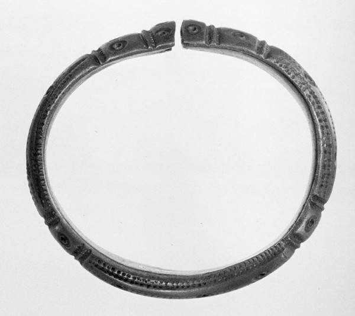

Bronze bracelet from the raised bog near Vriezenveen
The raised bog near Vriezenveen was a site of ritual sacrifice. Archaeologists found stone axes, bronze objects, and jewelry deliberately placed in the marsh. Because they were valuable, we consider them offerings. The area was used from the late Bronze Age onwards. A remarkable piece is the bronze bracelet with a cobalt-blue glass bead, dating from 400 to 50 BC. Bronze was expensive and often melted down and reused. Blue glass was rare. Such jewelry was for the wealthy or important. The bracelet was found in the Daarlerveen.